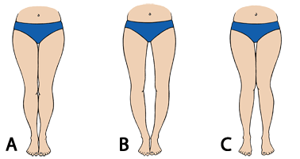
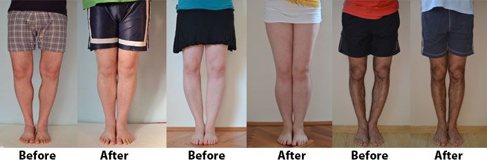

Bow Legs No More - Looking for a Permanent Remedy for Bow Legs Without the Need for Surgery?

Sarah Brown’s Bow legs no more
This Bow legs no more review is here to help you gain back the confidence and self esteem you lost due to bow legs. I understand how frustrating and embarrassing it can be to have bow legs. Have you undergone a lot of challenges trying to deal with your bow legs? Do you get embarrassed when people keep staring at your legs? Do you avoid certain clothes for fear of exposing your legs? Have you always dream of having perfect, straight and attractive legs? Do not worry because I have good news for you. There actually is a permanent remedy for your bow legs and you actually do not have to undergo surgery. Forget about the risks of all complications that come with surgery. Forget about the large amounts of money needed during surgery because Bow Legs No More involved quite low sums of money. It is simple, unique, safe and easy to understand.
Already Decided?
That's great! Click the button on your right and take the action now.
How To Tell If You Have Bow Legs...
To determine whether or not you have bow legs, knock knees, or any other kind of curvature, take a look at the following images...
IMAGE A: This is the way your legs should look. As you can see, your knees and ankles should be touching when you stand up, and four separate windows should be formed, which should be between the foot and the ankle, above the ankle, directly under the knee, and above the knee in the lower part of the thighs.
IMAGE B: This is a typical example of bow legs, and is otherwise known as the ‘O-shaped curvature'. This is because only the ankles are touching, which creates a shape that resembles the letter ‘o'.
IMAGE C: This is known as an X-shaped curvature, or ‘knock-knees', because the knees are typically touching when standing, but the ankles are kept apart, which creates a shape that resembles the letter ‘x'.
About the Author
Sarah brown the researcher and author in health and fitness take time to explain the what bow legs is and how it happens, above all she give you the best natural remedies for bow legs. In this article, the passionate drive towards improving the lives of her audience, allows her to go deep into the health and beauty persecution in quest for solution. The data gathered in this and all her articles, is from long research projects of identifying analysis and presenting of viable information on what works best for the bow legs.
What is the Bow Legs No More Book?
Bow legs no more ebookAfter the introduction to Bow Legs No More review, you might be asking yourself what it really is. This is a digital program based on a routine of exercises aimed at straightening your bow legs. Bow Legs No More is actually a book by Sarah Brown, which offers a comprehensive program for treating bow legs. This program is created by a woman who suffered from bow legs therefore she understands what you are going through and the program worked for her. The book gathers all her researches as well as her experiences about bow legs treatment. The program includes routine exercises, certain natural methods and workouts that can help you to reduce bow legs effectively. Inside it, you will discover the secret to straighten your legs. It purposes to help anyone who suffers from embarrassment, discomfort and low self-esteem due to having bow legs or knock-knees. Bow legs No More system has been used by many people around the world and the results were excellent. It has already worked for thousands of people all over the world.
This book will help you to change your posture and walk. It will also help to prevent you from certain joint related illness development.
It will help you do that which you have always wanted to do but the shape of your legs prevented you from doing it. This book is worth your consideration, it is very affordable and it is also available online. The author guarantees you that you just need one main copy of this book and you will have enough information to help you cure bow legs.
What Are You Waiting For?
Your Purchase is Backed Up by 30 Days Money Back Guarantee. If You Don't Like The Product, Give It Back And You Will Be Refunded With No Questions Asked!
Does Bow Legs No More Work?
The Bow Legs No More System is a ebook, which can be downloaded instantly in a PDF (e-book) format or viewed online. It is 100 % natural and safe hence it can be done in the privacy of your home. It is proven and very affordable hence worth your consideration. Hope this Bow Legs No More review will help you to make a wise decision and walk with confidence.
After reading this Bow Legs No More review, you might doubt whether Bow Legs No More really works. The answer is actually affirmative. It is just simple step-by-step natural exercises, which are done at home. This program has been tested and proven that it works. This system is developed by a person who understands what it really means to have bow legs. She suffered from bow legs, applied the program and it worked for her. The product comes with before and after photos and testimonies from customers, which prove to you that Bow Legs No More actually work. It also comes with 100% money back guarantee hence a clear indication that Bow Legs No More Program really works.

Related Post
Bow Legs No More - Looking for a Permanent Remedy for Bow Legs Without the Need for Surgery?
Beauty/
Skin Whitening Forever - How To Whiten Your Skin Naturally
 Beauty/
Beauty/
Purely Primal Skincare Guide Review - Does It Really Work ?
 Beauty/
Beauty/
Ageless Body System - HOW TO BE INSTANTLY AGELESS?

Recent Post
QUIT SMOKING MAGIC REVIEW
 Addiction/
Addiction/
ALCOHOL FREE FOREVER - HOW TO QUIT DRINKING TODAY FROM THE PRIVACY OF YOUR HOME
 Denatal Health/
Denatal Health/
Dentist Be Damned How To Get Rid Of Toothache Review - Does It Really Work?
 Dental Health/
Dental Health/
Tooth Defender 100% Natural Oral Care Review - Does It Really Work?